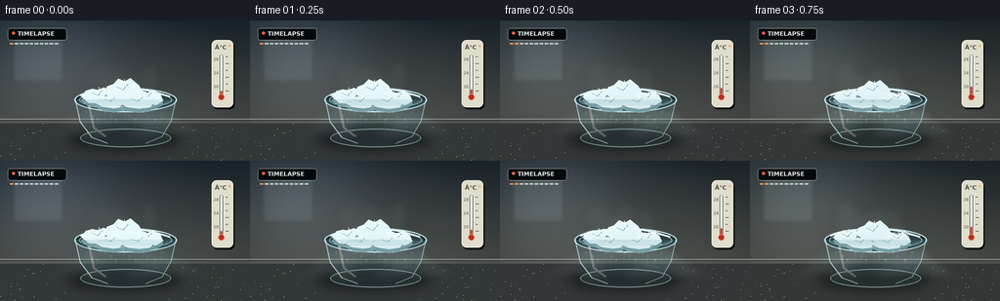
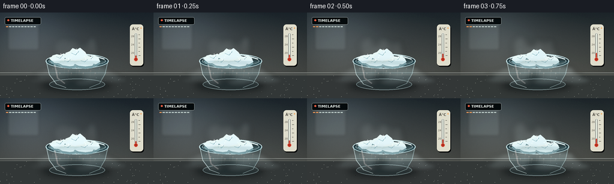
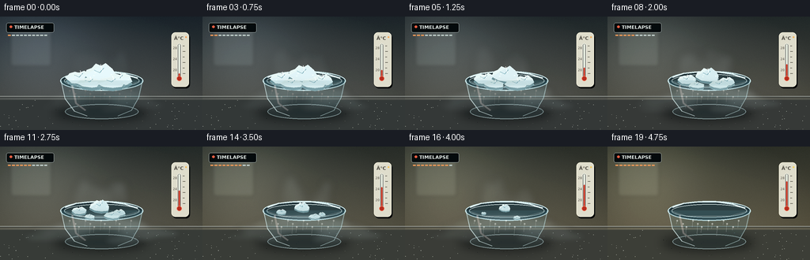
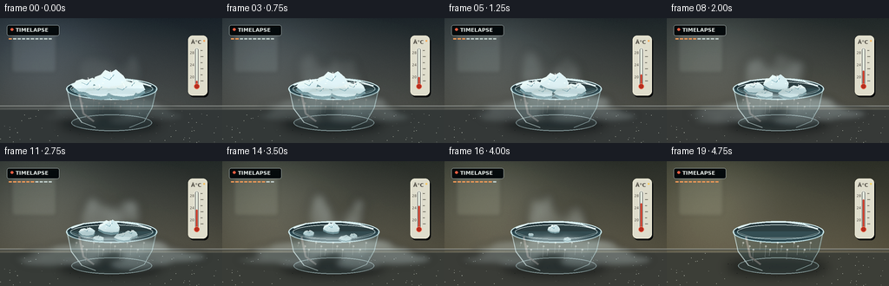

CODING AGENTS AS PIXEL WORLD MODELS
traex/GPT-5.6-Sol · phygen_116
点击播放 · 原生 RGB 像素
逐轮保存的候选
回放视频、检查图与代码变化。
每份候选均可单独播放。实际图片检查记录在下方工具轨迹中。
候选 01播放与检查图
点击播放 · 原生 RGB 像素


展开代码变化
--- 上一保存版本
+++ 本次保存版本
@@ -0,0 +1,268 @@
+from pathlib import Path
+import math
+import numpy as np
+from PIL import Image, ImageDraw, ImageFont, ImageFilter
+import artifact_io
+
+CASE_DIR = Path(__file__).resolve().parent
+W, H, N = 256, 144, 20
+S = 3
+WS, HS = W*S, H*S
+rng = np.random.default_rng(116)
+
+try:
+ FONT = ImageFont.truetype('/usr/share/fonts/truetype/dejavu/DejaVuSans.ttf', 6*S)
+ FONT_B = ImageFont.truetype('/usr/share/fonts/truetype/dejavu/DejaVuSans-Bold.ttf', 6*S)
+ FONT_TINY = ImageFont.truetype('/usr/share/fonts/truetype/dejavu/DejaVuSans.ttf', 4*S)
+except:
+ FONT = FONT_B = FONT_TINY = ImageFont.load_default()
+
+def sc(v):
+ if isinstance(v, (tuple, list)):
+ return tuple(int(round(x*S)) for x in v)
+ return int(round(v*S))
+
+def poly(draw, pts, **kw):
+ draw.polygon([(int(x*S), int(y*S)) for x,y in pts], **kw)
+
+def ellipse(draw, box, **kw):
+ draw.ellipse(sc(box), **kw)
+
+def line(draw, pts, **kw):
+ draw.line([(int(x*S), int(y*S)) for x,y in pts], **kw)
+
+def rounded(draw, box, radius, **kw):
+ draw.rounded_rectangle(sc(box), radius=sc(radius), **kw)
+
+def alpha_comp(base, layer):
+ return Image.alpha_composite(base, layer)
+
+# fixed fine grain and tabletop flecks prevent a sterile vector look
+noise = rng.normal(0, 1, (HS, WS)).astype(np.float32)
+
+# Ice chunk definitions: center x, base y, half width, height, disappearance, tilt
+chunks = [
+ (100, 78, 17, 16, .88, -0.12),
+ (126, 73, 20, 21, 1.00, 0.06),
+ (151, 80, 15, 15, .82, 0.15),
+ (113, 84, 16, 13, .72, 0.08),
+ (141, 84, 18, 14, .92, -0.08),
+]
+
+# Stable jagged normalized top contours for the five blocks
+jags = [
+ [(-1,0),(-.78,-.56),(-.38,-.73),(-.08,-.62),(.28,-.88),(.66,-.58),(1,-.18),(.88,.48),(.25,.7),(-.46,.63)],
+ [(-1,.15),(-.82,-.38),(-.5,-.54),(-.2,-.94),(.15,-.73),(.42,-1),(.82,-.48),(1,.05),(.82,.62),(.18,.72),(-.5,.58)],
+ [(-1,.08),(-.72,-.45),(-.3,-.78),(.08,-.58),(.5,-.87),(.92,-.36),(1,.25),(.48,.66),(-.2,.7),(-.75,.5)],
+ [(-1,.05),(-.6,-.54),(-.1,-.77),(.4,-.65),(1,-.2),(.84,.55),(.15,.7),(-.55,.53)],
+ [(-1,.1),(-.72,-.55),(-.25,-.72),(.15,-.93),(.55,-.64),(1,-.1),(.78,.56),(.16,.72),(-.5,.55)]
+]
+
+def make_background(p):
+ yy, xx = np.mgrid[0:HS, 0:WS]
+ # A cool room warms very subtly as the thermometer rises.
+ warm = p
+ top = np.array([39+18*warm, 48+12*warm, 54-2*warm], dtype=float)
+ bottom = np.array([75+20*warm, 78+12*warm, 76-3*warm], dtype=float)
+ q = np.clip(yy/(102*S),0,1)[...,None]
+ arr = top*(1-q) + bottom*q
+ # soft left window glow and vignette
+ glow = np.exp(-(((xx-45*S)/(75*S))**2 + ((yy-34*S)/(65*S))**2))[...,None]
+ arr += glow*np.array([25+10*p,28+6*p,31-4*p])
+ vig = ((xx-WS/2)/(WS/2))**2 + ((yy-HS/2)/(HS/2))**2
+ arr -= (10*np.clip(vig-.25,0,1))[...,None]
+ arr += noise[...,None]*1.35
+ arr = np.uint8(np.clip(arr,0,255))
+ im = Image.fromarray(arr,'RGB').convert('RGBA')
+ d = ImageDraw.Draw(im,'RGBA')
+ # blurred window panes / room details
+ window = Image.new('RGBA',(WS,HS),(0,0,0,0)); wd=ImageDraw.Draw(window,'RGBA')
+ rounded(wd,(13,16,65,63),3,fill=(182+int(28*p),198+int(18*p),201-int(10*p),31),outline=(221,226,219,38),width=sc(1))
+ line(wd,[(39,17),(39,62)],fill=(220,226,222,26),width=sc(1))
+ line(wd,[(14,39),(64,39)],fill=(220,226,222,24),width=sc(1))
+ window=window.filter(ImageFilter.GaussianBlur(sc(2.2)))
+ im=alpha_comp(im,window)
+ d=ImageDraw.Draw(im,'RGBA')
+ # wall seam and counter backsplash
+ line(d,[(0,101),(256,101)],fill=(208,214,208,55),width=sc(.7))
+ # table gradient block
+ table=Image.new('RGBA',(WS,HS),(0,0,0,0)); td=ImageDraw.Draw(table,'RGBA')
+ td.rectangle((0,sc(102),WS,HS),fill=(53+int(10*p),58+int(7*p),58,255))
+ # subtle horizontal reflected light
+ td.rectangle((0,sc(103),WS,sc(105)),fill=(146,152,143,22))
+ table=table.filter(ImageFilter.GaussianBlur(sc(.3)))
+ im=alpha_comp(im,table)
+ # tiny table speckles
+ d=ImageDraw.Draw(im,'RGBA')
+ speck_rng=np.random.default_rng(987)
+ for _ in range(95):
+ x=float(speck_rng.uniform(0,256)); y=float(speck_rng.uniform(106,144))
+ a=int(speck_rng.uniform(5,18))
+ ellipse(d,(x,y,x+.35,y+.22),fill=(210,214,202,a))
+ return im
+
+def draw_thermometer(im,p):
+ d=ImageDraw.Draw(im,'RGBA')
+ # shadow and ivory instrument body
+ rounded(d,(218,22,240,91),5,fill=(7,10,12,52))
+ rounded(d,(216.5,20,238.5,89),5,fill=(220,218,202,235),outline=(246,242,220,190),width=sc(.7))
+ # header
+ d.text((sc(220),sc(24)), '°C', font=FONT_B, fill=(77,74,66,220))
+ # tube recess
+ rounded(d,(224,34,229,79),2.5,fill=(75,76,72,115),outline=(248,249,238,145),width=sc(.5))
+ rounded(d,(225.2,35,227.8,79),1.3,fill=(226,232,220,180))
+ # Mercury climbs 18 -> 28 C
+ level_y = 72 - 28*p
+ rounded(d,(225.65,level_y,227.35,79),.8,fill=(202,61,43,245))
+ ellipse(d,(223.4,75.4,229.6,81.6),fill=(181,49,36,255),outline=(240,130,98,155),width=sc(.5))
+ # ticks and sparse labels
+ for j in range(6):
+ y=72-j*7
+ line(d,[(231,y),(234 if j%2==0 else 233,y)],fill=(80,78,68,180),width=sc(.55))
+ d.text((sc(218.5),sc(65.5)),'20',font=FONT_TINY,fill=(80,76,67,190))
+ d.text((sc(218.5),sc(51.5)),'24',font=FONT_TINY,fill=(80,76,67,190))
+ d.text((sc(218.5),sc(37.5)),'28',font=FONT_TINY,fill=(80,76,67,190))
+ # tiny warm indicator gleam
+ ellipse(d,(234,25,236,27),fill=(240,161+int(45*p),91,90+int(120*p)))
+
+def fog_layer(p, frame, foreground=False):
+ layer=Image.new('RGBA',(WS,HS),(0,0,0,0))
+ d=ImageDraw.Draw(layer,'RGBA')
+ rem=max(0,1-p)
+ # activity rises with warming but ceases when the solid is gone
+ activity=(0.42+1.65*p)*(rem**0.5)
+ if p>0.965: activity*=0.18
+ if foreground:
+ # Heavy CO2 hugs the tabletop and rolls over the bowl lip.
+ count=18
+ for k in range(count):
+ side=-1 if k%2==0 else 1
+ speed=(7+2.8*(k%5))*p
+ x=126 + side*(12+(k*11)%48 + speed) + 3*math.sin(frame*.37+k*1.7)
+ y=97 + (k%5)*5 + 2.0*math.sin(frame*.45+k)
+ rx=(13+(k*7)%19)*(0.7+0.52*activity)
+ ry=(3.5+(k*3)%6)*(0.75+0.3*activity)
+ a=int(np.clip((27+(k%4)*9)*activity,0,100))
+ ellipse(d,(x-rx,y-ry,x+rx,y+ry),fill=(213,232,233,a))
+ # spill streams crossing the front rim
+ for k in range(6):
+ x=100+k*10+3*math.sin(frame*.5+k)
+ y=88+k%2*2
+ ellipse(d,(x-9,y-5,x+11,y+13+7*p),fill=(224,240,241,int(45*activity)))
+ blur=4.0
+ else:
+ # buoyant, curling wisps immediately over very cold ice
+ count=14
+ for k in range(count):
+ phase=frame*.52+k*1.41
+ rise=(frame*2.2 + k*7)%47
+ x=126 + 27*math.sin(k*2.07+frame*.12) + 7*math.sin(phase*.35)
+ y=77-rise*.60
+ rx=5.5+(k%4)*2.5
+ ry=7+(k%3)*4
+ a=int(np.clip((15+(k%5)*6)*activity,0,75))
+ ellipse(d,(x-rx,y-ry,x+rx,y+ry),fill=(225,241,242,a))
+ blur=5.2
+ return layer.filter(ImageFilter.GaussianBlur(sc(blur)))
+
+def draw_bowl_and_ice(im,p,frame):
+ d=ImageDraw.Draw(im,'RGBA')
+ # diffuse shadow under bowl
+ sh=Image.new('RGBA',(WS,HS),(0,0,0,0)); sd=ImageDraw.Draw(sh,'RGBA')
+ ellipse(sd,(68,111,186,133),fill=(0,4,6,115))
+ sh=sh.filter(ImageFilter.GaussianBlur(sc(6)))
+ im=alpha_comp(im,sh)
+ # behind-vapor first
+ im=alpha_comp(im,fog_layer(p,frame,False))
+ d=ImageDraw.Draw(im,'RGBA')
+ # back glass rim and dark interior
+ ellipse(d,(76,69,181,94),fill=(35,53,58,150),outline=(204,229,231,170),width=sc(1.3))
+ ellipse(d,(81,73,176,90),fill=(47,65,68,205),outline=(236,250,247,70),width=sc(.6))
+ # cold frost around rim, receding over time
+ frost_a=int(155*(1-p)**.65)
+ line(d,[(82,77),(96,72),(116,70),(137,70),(158,73),(174,78)],fill=(222,241,242,frost_a),width=sc(1.8))
+
+ # The blocks shrink independently and sink slightly as they sublime.
+ for idx,(cx,by,hw,hh,death,tilt) in enumerate(chunks):
+ u=max(0.0,1-p/death)
+ if u<=0: continue
+ scale=u**0.56
+ sink=8*(1-scale)
+ wob=.6*math.sin(frame*.31+idx)
+ points=[]
+ for nx,ny in jags[idx]:
+ x=cx + nx*hw*scale + tilt*ny*hh*scale + wob
+ y=by + ny*hh*.66*scale + sink
+ points.append((x,y))
+ # bluish shadow extrusion on lower facets
+ shadow_pts=[(x,y+max(1.3,4*scale)) for x,y in points]
+ poly(d,shadow_pts,fill=(111,146,153,225),outline=(182,215,219,120))
+ base_col=(194+int(34*(1-p)),221+int(24*(1-p)),224+int(24*(1-p)),255)
+ poly(d,points,fill=base_col,outline=(241,250,247,235))
+ # top plane/facets and crystalline fissures
+ toppts=[]
+ for x,y in points[:max(4,len(points)//2+1)]: toppts.append((x,y))
+ if len(toppts)>=3:
+ poly(d,toppts,fill=(229,244,243,170))
+ if scale>.25:
+ line(d,[(cx-hw*.35*scale,by-hh*.25*scale+sink),(cx,by-hh*.08*scale+sink),(cx+hw*.28*scale,by-hh*.38*scale+sink)],fill=(117,165,176,145),width=sc(.55))
+ line(d,[(cx+.06*hw*scale,by-hh*.6*scale+sink),(cx+.18*hw*scale,by-hh*.15*scale+sink)],fill=(255,255,255,165),width=sc(.55))
+ # tiny frost crystals at the contact region
+ for j in range(3):
+ ang=idx*2.1+j*2.2
+ xx=cx+math.cos(ang)*hw*.75*scale; yy=by+math.sin(ang)*2*scale+sink
+ ellipse(d,(xx-1.1*scale,yy-.5*scale,xx+1.1*scale,yy+.5*scale),fill=(239,250,248,170))
+
+ # front transparent bowl body
+ glass=Image.new('RGBA',(WS,HS),(0,0,0,0)); gd=ImageDraw.Draw(glass,'RGBA')
+ # silhouette polygon with curved-looking stacked ellipses
+ poly(gd,[(76,81),(82,105),(94,120),(111,126),(147,126),(166,119),(176,103),(181,81)],fill=(93,151,163,38))
+ ellipse(gd,(82,111,175,130),fill=(91,131,139,36),outline=(194,226,229,145),width=sc(1))
+ # side edges and rim highlight
+ line(gd,[(77,81),(82,104),(94,120),(110,126)],fill=(218,241,241,180),width=sc(1.05))
+ line(gd,[(180,81),(175,103),(166,119),(149,126)],fill=(196,229,231,150),width=sc(1.0))
+ line(gd,[(82,82),(100,88),(154,88),(176,82)],fill=(245,255,252,105),width=sc(.7))
+ # condensation streaks become stronger while warming
+ for k in range(13):
+ x=88+k*6.4 + 1.2*math.sin(k*2.3)
+ y=94+(k%3)*4
+ length=4+(k*5)%11
+ a=int(35+95*p)
+ line(gd,[(x,y),(x-.7,y+length)],fill=(218,239,240,a),width=sc(.45))
+ ellipse(gd,(x-1,y-1,x+1,y+1),fill=(239,250,248,a))
+ # broad reflected stripe
+ line(gd,[(91,87),(96,110),(108,119)],fill=(255,255,255,72),width=sc(2.2))
+ im=alpha_comp(im,glass)
+ # foreground dense vapor pours over rim and spreads downward
+ im=alpha_comp(im,fog_layer(p,frame,True))
+ return im
+
+def draw_overlays(im,p):
+ d=ImageDraw.Draw(im,'RGBA')
+ # Quiet documentary-style time-lapse marker and warming cue.
+ rounded(d,(8,8,68,20),2.2,fill=(9,14,16,118),outline=(221,235,232,34),width=sc(.4))
+ ellipse(d,(12,11.2,15.2,14.4),fill=(230,95,68,220))
+ d.text((sc(18),sc(10)), 'TIMELAPSE',font=FONT_B,fill=(228,235,231,210))
+ # progress ticks, not a distracting digital readout
+ for j in range(10):
+ col=(231,151,89,205) if j <= int(round(p*9)) else (190,204,200,50)
+ d.rectangle((sc(10+j*5.1),sc(23),sc(13.4+j*5.1),sc(24.2)),fill=col)
+ return im
+
+frames=[]
+for i in range(N):
+ p=i/(N-1)
+ im=make_background(p)
+ draw_thermometer(im,p)
+ im=draw_bowl_and_ice(im,p,i)
+ im=draw_overlays(im,p)
+ # mild optical softness and high-quality reduction
+ im=im.convert('RGB').resize((W,H),Image.Resampling.LANCZOS)
+ arr=np.asarray(im).astype(np.int16)
+ # modest contrast to keep the white vapor dimensional
+ arr=np.clip((arr-128)*1.035+128,0,255).astype(np.uint8)
+ frames.append(arr)
+
+frames=np.stack(frames,axis=0)
+artifact_io.save(frames, CASE_DIR)
+print('saved',frames.shape,frames.dtype, 'range',frames.min(),frames.max())
候选 02播放与检查图
点击播放 · 原生 RGB 像素


展开代码变化
--- 上一保存版本
+++ 本次保存版本
@@ -130,7 +130,9 @@
d=ImageDraw.Draw(layer,'RGBA')
rem=max(0,1-p)
# activity rises with warming but ceases when the solid is gone
- activity=(0.42+1.65*p)*(rem**0.5)
+ # The fog visibly intensifies as heat transfer speeds sublimation, then
+ # collapses only once there is almost no dry ice left.
+ activity=(0.62+2.65*p)*(rem**0.34)
if p>0.965: activity*=0.18
if foreground:
# Heavy CO2 hugs the tabletop and rolls over the bowl lip.
@@ -142,13 +144,13 @@
y=97 + (k%5)*5 + 2.0*math.sin(frame*.45+k)
rx=(13+(k*7)%19)*(0.7+0.52*activity)
ry=(3.5+(k*3)%6)*(0.75+0.3*activity)
- a=int(np.clip((27+(k%4)*9)*activity,0,100))
- ellipse(d,(x-rx,y-ry,x+rx,y+ry),fill=(213,232,233,a))
+ a=int(np.clip((35+(k%4)*11)*activity,0,145))
+ ellipse(d,(x-rx,y-ry,x+rx,y+ry),fill=(221,239,240,a))
# spill streams crossing the front rim
for k in range(6):
x=100+k*10+3*math.sin(frame*.5+k)
y=88+k%2*2
- ellipse(d,(x-9,y-5,x+11,y+13+7*p),fill=(224,240,241,int(45*activity)))
+ ellipse(d,(x-9,y-5,x+11,y+13+7*p),fill=(229,244,245,min(155,int(58*activity))))
blur=4.0
else:
# buoyant, curling wisps immediately over very cold ice
@@ -160,8 +162,8 @@
y=77-rise*.60
rx=5.5+(k%4)*2.5
ry=7+(k%3)*4
- a=int(np.clip((15+(k%5)*6)*activity,0,75))
- ellipse(d,(x-rx,y-ry,x+rx,y+ry),fill=(225,241,242,a))
+ a=int(np.clip((21+(k%5)*8)*activity,0,110))
+ ellipse(d,(x-rx,y-ry,x+rx,y+ry),fill=(230,246,246,a))
blur=5.2
return layer.filter(ImageFilter.GaussianBlur(sc(blur)))
可观测工具轨迹
实际执行的命令与返回图片。
命令 1exit 0
/bin/bash -lc "ls -la && printf '\\n--- prompt.txt ---\\n' && cat prompt.txt && printf '\\n--- GENERATION_RULES.md ---\\n' && cat GENERATION_RULES.md && printf '\\n--- task_spec.json ---\\n' && cat task_spec.json"
命令 2exit 0
/bin/bash -lc "sed -n '1,240p' artifact_io.py"
命令 3exit 0
/bin/bash -lc "cat > generate.py <<'PY'
from pathlib import Path
import math
import numpy as np
from PIL import Image, ImageDraw, ImageFont, ImageFilter
import artifact_io
CASE_DIR = Path(__file__).resolve().parent
W, H, N = 256, 144, 20
S = 3
WS, HS = W*S, H*S
rng = np.random.default_rng(116)
try:
FONT = ImageFont.truetype('/usr/share/fonts/truetype/dejavu/DejaVuSans.ttf', 6*S)
FONT_B = ImageFont.truetype('/usr/share/fonts/truetype/dejavu/DejaVuSans-Bold.ttf', 6*S)
FONT_TINY = ImageFont.truetype('/usr/share/fonts/truetype/dejavu/DejaVuSans.ttf', 4*S)
except:
FONT = FONT_B = FONT_TINY = ImageFont.load_default()
def sc(v):
if isinstance(v, (tuple, list)):
return tuple(int(round(x*S)) for x in v)
return int(round(v*S))
def poly(draw, pts, **kw):
draw.polygon([(int(x*S), int(y*S)) for x,y in pts], **kw)
def ellipse(draw, box, **kw):
draw.ellipse(sc(box), **kw)
def line(draw, pts, **kw):
draw.line([(int(x*S), int(y*S)) for x,y in pts], **kw)
def rounded(draw, box, radius, **kw):
draw.rounded_rectangle(sc(box), radius=sc(radius), **kw)
def alpha_comp(base, layer):
return Image.alpha_composite(base, layer)
# fixed fine grain and tabletop flecks prevent a sterile vector look
noise = rng.normal(0, 1, (HS, WS)).astype(np.float32)
# Ice chunk definitions: center x, base y, half width, height, disappearance, tilt
chunks = [
(100, 78, 17, 16, .88, -0.12),
(126, 73, 20, 21, 1.00, 0.06),
(151, 80, 15, 15, .82, 0.15),
(113, 84, 16, 13, .72, 0.08),
(141, 84, 18, 14, .92, -0.08),
]
# Stable jagged normalized top contours for the five blocks
jags = [
[(-1,0),(-.78,-.56),(-.38,-.73),(-.08,-.62),(.28,-.88),(.66,-.58),(1,-.18),(.88,.48),(.25,.7),(-.46,.63)],
[(-1,.15),(-.82,-.38),(-.5,-.54),(-.2,-.94),(.15,-.73),(.42,-1),(.82,-.48),(1,.05),(.82,.62),(.18,.72),(-.5,.58)],
[(-1,.08),(-.72,-.45),(-.3,-.78),(.08,-.58),(.5,-.87),(.92,-.36),(1,.25),(.48,.66),(-.2,.7),(-.75,.5)],
[(-1,.05),(-.6,-.54),(-.1,-.77),(.4,-.65),(1,-.2),(.84,.55),(.15,.7),(-.55,.53)],
[(-1,.1),(-.72,-.55),(-.25,-.72),(.15,-.93),(.55,-.64),(1,-.1),(.78,.56),(.16,.72),(-.5,.55)]
]
def make_background(p):
yy, xx = np.mgrid[0:HS, 0:WS]
# A cool room warms very subtly as the thermometer rises.
warm = p
top = np.array([39+18*warm, 48+12*warm, 54-2*warm], dtype=float)
bottom = np.array([75+20*warm, 78+12*warm, 76-3*warm], dtype=float)
q = np.clip(yy/(102*S),0,1)[...,None]
arr = top*(1-q) + bottom*q
# soft left window glow and vignette
glow = np.exp(-(((xx-45*S)/(75*S))**2 + ((yy-34*S)/(65*S))**2))[...,None]
arr += glow*np.array([25+10*p,28+6*p,31-4*p])
vig = ((xx-WS/2)/(WS/2))**2 + ((yy-HS/2)/(HS/2))**2
arr -= (10*np.clip(vig-.25,0,1))[...,None]
arr += noise[...,None]*1.35
arr = np.uint8(np.clip(arr,0,255))
im = Image.fromarray(arr,'RGB').convert('RGBA')
d = ImageDraw.Draw(im,'RGBA')
# blurred window panes / room details
window = Image.new('RGBA',(WS,HS),(0,0,0,0)); wd=ImageDraw.Draw(window,'RGBA')
rounded(wd,(13,16,65,63),3,fill=(182+int(28*p),198+int(18*p),201-int(10*p),31),outline=(221,226,219,38),width=sc(1))
line(wd,[(39,17),(39,62)],fill=(220,226,222,26),width=sc(1))
line(wd,[(14,39),(64,39)],fill=(220,226,222,24),width=sc(1))
window=window.filter(ImageFilter.GaussianBlur(sc(2.2)))
im=alpha_comp(im,window)
d=ImageDraw.Draw(im,'RGBA')
# wall seam and counter backsplash
line(d,[(0,101),(256,101)],fill=(208,214,208,55),width=sc(.7))
# table gradient block
table=Image.new('RGBA',(WS,HS),(0,0,0,0)); td=ImageDraw.Draw(table,'RGBA')
td.rectangle((0,sc(102),WS,HS),fill=(53+int(10*p),58+int(7*p),58,255))
# subtle horizontal reflected light
td.rectangle((0,sc(103),WS,sc(105)),fill=(146,152,143,22))
table=table.filter(ImageFilter.GaussianBlur(sc(.3)))
im=alpha_comp(im,table)
# tiny table speckles
d=ImageDraw.Draw(im,'RGBA')
speck_rng=np.random.default_rng(987)
for _ in range(95):
x=float(speck_rng.uniform(0,256)); y=float(speck_rng.uniform(106,144))
a=int(speck_rng.uniform(5,18))
ellipse(d,(x,y,x+.35,y+.22),fill=(210,214,202,a))
return im
def draw_thermometer(im,p):
d=ImageDraw.Draw(im,'RGBA')
# shadow and ivory instrument body
rounded(d,(218,22,240,91),5,fill=(7,10,12,52))
rounded(d,(216.5,20,238.5,89),5,fill=(220,218,202,235),outline=(246,242,220,190),width=sc(.7))
# header
d.text((sc(220),sc(24)), '°C', font=FONT_B, fill=(77,74,66,220))
# tube recess
rounded(d,(224,34,229,79),2.5,fill=(75,76,72,115),outline=(248,249,238,145),width=sc(.5))
rounded(d,(225.2,35,227.8,79),1.3,fill=(226,232,220,180))
# Mercury climbs 18 -> 28 C
level_y = 72 - 28*p
rounded(d,(225.65,level_y,227.35,79),.8,fill=(202,61,43,245))
ellipse(d,(223.4,75.4,229.6,81.6),fill=(181,49,36,255),outline=(240,130,98,155),width=sc(.5))
# ticks and sparse labels
for j in range(6):
y=72-j*7
line(d,[(231,y),(234 if j%2==0 else 233,y)],fill=(80,78,68,180),width=sc(.55))
d.text((sc(218.5),sc(65.5)),'20',font=FONT_TINY,fill=(80,76,67,190))
d.text((sc(218.5),sc(51.5)),'24',font=FONT_TINY,fill=(80,76,67,190))
d.text((sc(218.5),sc(37.5)),'28',font=FONT_TINY,fill=(80,76,67,190))
# tiny warm indicator gleam
ellipse(d,(234,25,236,27),fill=(240,161+int(45*p),91,90+int(120*p)))
def fog_layer(p, frame, foreground=False):
layer=Image.new('RGBA',(WS,HS),(0,0,0,0))
d=ImageDraw.Draw(layer,'RGBA')
rem=max(0,1-p)
# activity rises with warming but ceases when the solid is gone
activity=(0.42+1.65*p)*(rem**0.5)
if p>0.965: activity*=0.18
if foreground:
# Heavy CO2 hugs the tabletop and rolls over the bowl lip.
count=18
for k in range(count):
side=-1 if k%2==0 else 1
speed=(7+2.8*(k%5))*p
x=126 + side*(12+(k*11)%48 + speed) + 3*math.sin(frame*.37+k*1.7)
y=97 + (k%5)*5 + 2.0*math.sin(frame*.45+k)
rx=(13+(k*7)%19)*(0.7+0.52*activity)
ry=(3.5+(k*3)%6)*(0.75+0.3*activity)
a=int(np.clip((27+(k%4)*9)*activity,0,100))
ellipse(d,(x-rx,y-ry,x+rx,y+ry),fill=(213,232,233,a))
# spill streams crossing the front rim
for k in range(6):
x=100+k*10+3*math.sin(frame*.5+k)
y=88+k%2*2
ellipse(d,(x-9,y-5,x+11,y+13+7*p),fill=(224,240,241,int(45*activity)))
blur=4.0
else:
# buoyant, curling wisps immediately over very cold ice
count=14
for k in range(count):
phase=frame*.52+k*1.41
rise=(frame*2.2 + k*7)%47
x=126 + 27*math.sin(k*2.07+frame*.12) + 7*math.sin(phase*.35)
y=77-rise*.60
rx=5.5+(k%4)*2.5
ry=7+(k%3)*4
a=int(np.clip((15+(k%5)*6)*activity,0,75))
ellipse(d,(x-rx,y-ry,x+rx,y+ry),fill=(225,241,242,a))
blur=5.2
return layer.filter(ImageFilter.GaussianBlur(sc(blur)))
def draw_bowl_and_ice(im,p,frame):
d=ImageDraw.Draw(im,'RGBA')
# diffuse shadow under bowl
sh=Image.new('RGBA',(WS,HS),(0,0,0,0)); sd=ImageDraw.Draw(sh,'RGBA')
ellipse(sd,(68,111,186,133),fill=(0,4,6,115))
sh=sh.filter(ImageFilter.GaussianBlur(sc(6)))
im=alpha_comp(im,sh)
# behind-vapor first
im=alpha_comp(im,fog_layer(p,frame,False))
d=ImageDraw.Draw(im,'RGBA')
# back glass rim and dark interior
ellipse(d,(76,69,181,94),fill=(35,53,58,150),outline=(204,229,231,170),width=sc(1.3))
ellipse(d,(81,73,176,90),fill=(47,65,68,205),outline=(236,250,247,70),width=sc(.6))
# cold frost around rim, receding over time
frost_a=int(155*(1-p)**.65)
line(d,[(82,77),(96,72),(116,70),(137,70),(158,73),(174,78)],fill=(222,241,242,frost_a),width=sc(1.8))
# The blocks shrink independently and sink slightly as they sublime.
for idx,(cx,by,hw,hh,death,tilt) in enumerate(chunks):
u=max(0.0,1-p/death)
if u<=0: continue
scale=u**0.56
sink=8*(1-scale)
wob=.6*math.sin(frame*.31+idx)
points=[]
for nx,ny in jags[idx]:
x=cx + nx*hw*scale + tilt*ny*hh*scale + wob
y=by + ny*hh*.66*scale + sink
points.append((x,y))
# bluish shadow extrusion on lower facets
shadow_pts=[(x,y+max(1.3,4*scale)) for x,y in points]
poly(d,shadow_pts,fill=(111,146,153,225),outline=(182,215,219,120))
base_col=(194+int(34*(1-p)),221+int(24*(1-p)),224+int(24*(1-p)),255)
poly(d,points,fill=base_col,outline=(241,250,247,235))
# top plane/facets and crystalline fissures
toppts=[]
for x,y in points[:max(4,len(points)//2+1)]: toppts.append((x,y))
if len(toppts)>=3:
poly(d,toppts,fill=(229,244,243,170))
if scale>.25:
line(d,[(cx-hw*.35*scale,by-hh*.25*scale+sink),(cx,by-hh*.08*scale+sink),(cx+hw*.28*scale,by-hh*.38*scale+sink)],fill=(117,165,176,145),width=sc(.55))
line(d,[(cx+.06*hw*scale,by-hh*.6*scale+sink),(cx+.18*hw*scale,by-hh*.15*scale+sink)],fill=(255,255,255,165),width=sc(.55))
# tiny frost crystals at the contact region
for j in range(3):
ang=idx*2.1+j*2.2
xx=cx+math.cos(ang)*hw*.75*scale; yy=by+math.sin(ang)*2*scale+sink
ellipse(d,(xx-1.1*scale,yy-.5*scale,xx+1.1*scale,yy+.5*scale),fill=(239,250,248,170))
# front transparent bowl body
glass=Image.new('RGBA',(WS,HS),(0,0,0,0)); gd=ImageDraw.Draw(glass,'RGBA')
# silhouette polygon with curved-looking stacked ellipses
poly(gd,[(76,81),(82,105),(94,120),(111,126),(147,126),(166,119),(176,103),(181,81)],fill=(93,151,163,38))
ellipse(gd,(82,111,175,130),fill=(91,131,139,36),outline=(194,226,229,145),width=sc(1))
# side edges and rim highlight
line(gd,[(77,81),(82,104),(94,120),(110,126)],fill=(218,241,241,180),width=sc(1.05))
line(gd,[(180,81),(175,103),(166,119),(149,126)],fill=(196,229,231,150),width=sc(1.0))
line(gd,[(82,82),(100,88),(154,88),(176,82)],fill=(245,255,252,105),width=sc(.7))
# condensation streaks become stronger while warming
for k in range(13):
x=88+k*6.4 + 1.2*math.sin(k*2.3)
y=94+(k%3)*4
length=4+(k*5)%11
a=int(35+95*p)
line(gd,[(x,y),(x-.7,y+length)],fill=(218,239,240,a),width=sc(.45))
ellipse(gd,(x-1,y-1,x+1,y+1),fill=(239,250,248,a))
# broad reflected stripe
line(gd,[(91,87),(96,110),(108,119)],fill=(255,255,255,72),width=sc(2.2))
im=alpha_comp(im,glass)
# foreground dense vapor pours over rim and spreads downward
im=alpha_comp(im,fog_layer(p,frame,True))
return im
def draw_overlays(im,p):
d=ImageDraw.Draw(im,'RGBA')
# Quiet documentary-style time-lapse marker and warming cue.
rounded(d,(8,8,68,20),2.2,fill=(9,14,16,118),outline=(221,235,232,34),width=sc(.4))
ellipse(d,(12,11.2,15.2,14.4),fill=(230,95,68,220))
d.text((sc(18),sc(10)), 'TIMELAPSE',font=FONT_B,fill=(228,235,231,210))
# progress ticks, not a distracting digital readout
for j in range(10):
col=(231,151,89,205) if j <= int(round(p*9)) else (190,204,200,50)
d.rectangle((sc(10+j*5.1),sc(23),sc(13.4+j*5.1),sc(24.2)),fill=col)
return im
frames=[]
for i in range(N):
p=i/(N-1)
im=make_background(p)
draw_thermometer(im,p)
im=draw_bowl_and_ice(im,p,i)
im=draw_overlays(im,p)
# mild optical softness and high-quality reduction
im=im.convert('RGB').resize((W,H),Image.Resampling.LANCZOS)
arr=np.asarray(im).astype(np.int16)
# modest contrast to keep the white vapor dimensional
arr=np.clip((arr-128)*1.035+128,0,255).astype(np.uint8)
frames.append(arr)
frames=np.stack(frames,axis=0)
artifact_io.save(frames, CASE_DIR)
print('saved',frames.shape,frames.dtype, 'range',frames.min(),frames.max())
PY
python generate.py"命令 4exit 0
/bin/bash -lc "grep -n \"text\\|activity=\\|fill=(213\\|fill=(224\\|fill=(225\" generate.py | head -20"
命令 5exit 0
/bin/bash -lc 'python generate.py && ls -lh pixels.npz index.html inspection.png frames/00.png frames/19.png'
视觉工具实际返回图片 1

视觉工具实际返回图片 2

保存候选 2 份；完成命令 5 次；可验证图片返回 2 张。原始 API 响应与完整日志保留在本地。